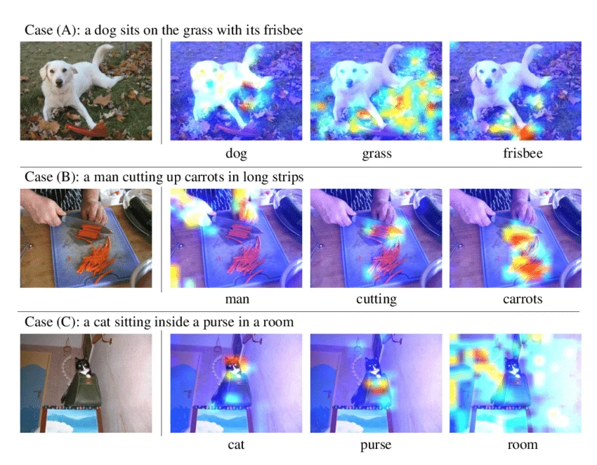

<!-- .slide: id="title" class="section-divider" data-state="is-section-divider" --> # LLMs 0 to 100 Module 3: Attention Mechanisms From Fixed Windows to Learned Lookups --- <!-- .slide: id="review-1" --> ## Review: Module 2 <div class="slide-columns" style="grid-template-columns: repeat(2, 1fr); gap: 30px;"> <div> **The MLP** A multi-layer perceptron applies repeated linear transformations with nonlinear activations between them: $$\mathbf{h} = \sigma(W\mathbf{x} + \mathbf{b})$$ An MLP with enough hidden units can approximate any continuous function (universal approximation theorem). </div> <div> **Limitations for Sequences** An MLP over a fixed window of tokens treats each position identically, but: - The context window is fixed: token 1 cannot directly inform token 50 - Flattening token vectors destroys the idea that the same pattern can appear in many positions - Parameter count grows with context length - There is no direct mechanism for one token to select information from another token </div> </div> --- <!-- .slide: id="review-2" --> ## Review: Why the Architecture Matters <div class="slide-columns" style="grid-template-columns: repeat(2, 1fr); gap: 30px;"> <div> **From Module 2** The single neuron could not solve XOR because a linear boundary cannot separate entangled classes. The fix was a hidden layer with a nonlinearity — the architecture had to match the structure of the problem. </div> <div> **Same Principle, Bigger Scale** Language has structure that an MLP does not match: - Every token can depend on any earlier token, not just its neighbors - The same syntactic pattern ("the ___") appears at every position - The relevant context length varies per token **The architecture must match the structure of the data.** </div> </div> --- <!-- .slide: id="divider-why-attention" class="section-divider" data-state="is-section-divider" --> # Why Attention? From fixed windows to selective retrieval --- <!-- .slide: id="mlp-failure" --> ## Predicting the Next Word with an MLP The task: given the words so far, predict the next one. An MLP reads a **fixed window** of the most recent tokens, flattens them into one long vector, and maps that to a distribution over the vocabulary. <div style="text-align: center; margin: 8px 0;"> <svg viewBox="0 0 860 260" width="100%" style="max-height: 250px;"> <!-- window slots --> <text x="30" y="28" fill="#8892a4" font-size="13">Fixed window of 4 tokens</text> <g font-size="14" font-weight="600" text-anchor="middle"> <rect x="30" y="40" width="90" height="38" rx="5" fill="#0d1225" stroke="#4a9eff" stroke-width="2"/> <text x="75" y="64" fill="#e8eaf0">cat</text> <rect x="135" y="40" width="90" height="38" rx="5" fill="#0d1225" stroke="#50c878" stroke-width="2"/> <text x="180" y="64" fill="#e8eaf0">sat</text> <rect x="240" y="40" width="90" height="38" rx="5" fill="#0d1225" stroke="#f5a623" stroke-width="2"/> <text x="285" y="64" fill="#e8eaf0">on</text> <rect x="345" y="40" width="90" height="38" rx="5" fill="#0d1225" stroke="#c792ea" stroke-width="2"/> <text x="390" y="64" fill="#e8eaf0">the</text> </g> <g font-size="11" fill="#8892a4" text-anchor="middle"> <text x="75" y="95">slot 1 · W₁</text> <text x="180" y="95">slot 2 · W₂</text> <text x="285" y="95">slot 3 · W₃</text> <text x="390" y="95">slot 4 · W₄</text> </g> <!-- arrows to hidden --> <line x1="75" y1="100" x2="232" y2="150" stroke="#4a9eff" stroke-width="1.5"/> <line x1="180" y1="100" x2="232" y2="150" stroke="#50c878" stroke-width="1.5"/> <line x1="285" y1="100" x2="232" y2="150" stroke="#f5a623" stroke-width="1.5"/> <line x1="390" y1="100" x2="232" y2="150" stroke="#c792ea" stroke-width="1.5"/> <rect x="150" y="150" width="165" height="34" rx="5" fill="rgba(74,158,255,0.10)" stroke="#4a9eff" stroke-width="1.5"/> <text x="232" y="172" fill="#e8eaf0" font-size="13" text-anchor="middle">hidden layer</text> <line x1="315" y1="167" x2="360" y2="167" stroke="#8892a4" stroke-width="1.5" marker-end="url(#arrm)"/> <rect x="360" y="150" width="150" height="34" rx="5" fill="#0d1225" stroke="#8892a4" stroke-width="1.5"/> <text x="435" y="172" fill="#e8eaf0" font-size="13" text-anchor="middle">softmax over vocab</text> <line x1="510" y1="167" x2="560" y2="167" stroke="#8892a4" stroke-width="1.5" marker-end="url(#arrm)"/> <rect x="560" y="148" width="100" height="38" rx="5" fill="#0d1225" stroke="#3fb950" stroke-width="2.5"/> <text x="610" y="172" fill="#3fb950" font-size="15" text-anchor="middle" font-weight="600">mat</text> <text x="610" y="135" fill="#8892a4" font-size="12" text-anchor="middle">prediction</text> <defs> <marker id="arrm" markerWidth="7" markerHeight="7" refX="6" refY="3.5" orient="auto"> <path d="M0,0 L7,3.5 L0,7 Z" fill="#8892a4"/> </marker> </defs> </svg> </div> Each slot has its own weight block. The window works for this sentence, but the structure of language does not fit a fixed grid of positions. --- <!-- .slide: id="mlp-rigid-positions" --> <section id="mlp-rigid"> <h2>Rigid Positionality: Weights Are Bound to Slots</h2> <div class="interactive-host" data-widget="mlpRigid"></div> </section> --- <!-- .slide: id="mlp-two-failures" --> ## Two Things the MLP Cannot Do <div class="slide-columns" style="grid-template-columns: repeat(2, 1fr); gap: 30px;"> <div> **Rigid positionality** Each slot connects to its own weights. The word "the" in slot 1 and "the" in slot 4 are processed by completely different parameters. Whatever the model learns about "the" at one position must be relearned from scratch at every other position. </div> <div> **No selective retrieval** To predict "mat", the useful context is "sat" and "cat". But the MLP flattens the whole window into one vector and treats every slot equally. There is no mechanism for one token to reach out and pull information from another. </div> </div> <div class="note"> The architecture must match the data. Language needs variable-length context, weight sharing across positions, and a way to selectively retrieve information. An MLP over a fixed window provides none of these. </div> --- <!-- .slide: id="fixed-context-bottleneck" --> ## The Fixed-Context Bottleneck Recurrent models (RNNs, LSTMs) handle variable length by reading tokens one at a time and compressing everything seen so far into a **single hidden state vector**. <div style="text-align: center; margin: 8px 0;"> <svg viewBox="0 0 820 150" width="100%" style="max-height: 140px;"> <g font-size="13" text-anchor="middle" font-weight="600"> <rect x="20" y="50" width="70" height="34" rx="4" fill="#0d1225" stroke="#4a9eff" stroke-width="1.5"/><text x="55" y="72" fill="#e8eaf0">the</text> <rect x="110" y="50" width="70" height="34" rx="4" fill="#0d1225" stroke="#4a9eff" stroke-width="1.5"/><text x="145" y="72" fill="#e8eaf0">cat</text> <rect x="200" y="50" width="70" height="34" rx="4" fill="#0d1225" stroke="#4a9eff" stroke-width="1.5"/><text x="235" y="72" fill="#e8eaf0">sat</text> <rect x="290" y="50" width="70" height="34" rx="4" fill="#0d1225" stroke="#4a9eff" stroke-width="1.5"/><text x="325" y="72" fill="#e8eaf0">on</text> <rect x="380" y="50" width="70" height="34" rx="4" fill="#0d1225" stroke="#4a9eff" stroke-width="1.5"/><text x="415" y="72" fill="#e8eaf0">the</text> <rect x="470" y="50" width="70" height="34" rx="4" fill="#0d1225" stroke="#4a9eff" stroke-width="1.5"/><text x="505" y="72" fill="#e8eaf0">mat</text> </g> <g stroke="#8892a4" stroke-width="1.5" marker-end="url(#arrb)"> <line x1="90" y1="67" x2="108" y2="67"/><line x1="180" y1="67" x2="198" y2="67"/> <line x1="270" y1="67" x2="288" y2="67"/><line x1="360" y1="67" x2="378" y2="67"/> <line x1="450" y1="67" x2="468" y2="67"/><line x1="540" y1="67" x2="600" y2="67"/> </g> <rect x="600" y="46" width="170" height="42" rx="6" fill="rgba(231,76,60,0.10)" stroke="#e74c3c" stroke-width="2"/> <text x="685" y="64" fill="#e8eaf0" font-size="12" text-anchor="middle">one fixed-size</text> <text x="685" y="80" fill="#e8eaf0" font-size="12" text-anchor="middle">hidden state</text> <text x="685" y="118" fill="#e74c3c" font-size="12" text-anchor="middle">everything squeezed through here</text> <defs><marker id="arrb" markerWidth="7" markerHeight="7" refX="6" refY="3.5" orient="auto"><path d="M0,0 L7,3.5 L0,7 Z" fill="#8892a4"/></marker></defs> </svg> </div> <div class="note"> **Problem:** no matter how long the input, all of it must fit through one fixed-size bottleneck. The model has to decide what to keep before it knows what will be needed later. Early tokens fade as the state is overwritten. </div> --- <div class="figure-card">  <div class="figure-info"> ## Bahdanau, Cho & Bengio <!-- .element: class="fragment fade-in" --> <div class="fragment fade-in"> ### Made Attention a Central Mechanism - Dzmitry Bahdanau, Kyunghyun Cho, and Yoshua Bengio (2014) - "Neural Machine Translation by Jointly Learning to Align and Translate" - Their translation model learned to **align** each output word to the most relevant input words - Instead of one compressed vector, the decoder could look back at every input representation directly - Attention began as a fix for the fixed-size bottleneck, then became a first-class mechanism </div> </div> </div> --- <!-- .slide: id="attention-concept-viz" --> ## What Attention Does Before any math, here is the operation: every output word is a **weighted sum of all input value vectors**. The weights are different for each query word, so each token builds its own context. <div style="text-align: center; margin: 10px 0;"> <svg viewBox="0 0 900 340" width="100%" style="max-height: 320px;"> <text x="415" y="20" fill="#8892a4" font-size="12" text-anchor="middle">columns are input values; rows are output tokens</text> <g font-size="12" text-anchor="middle" font-weight="600"> <text x="215" y="48" fill="#50c878">v_the</text> <text x="300" y="48" fill="#50c878">v_cat</text> <text x="385" y="48" fill="#50c878">v_sat</text> <text x="470" y="48" fill="#50c878">v_on</text> <text x="555" y="48" fill="#50c878">v_mat</text> </g> <g font-size="12" text-anchor="end" font-weight="600"> <text x="150" y="82" fill="#4a9eff">o_the =</text> <text x="150" y="128" fill="#4a9eff">o_cat =</text> <text x="150" y="174" fill="#f5a623">o_sat =</text> <text x="150" y="220" fill="#4a9eff">o_on =</text> <text x="150" y="266" fill="#4a9eff">o_mat =</text> </g> <g font-size="11" text-anchor="middle"> <rect x="175" y="62" width="80" height="32" rx="4" fill="rgba(74,158,255,0.11)" stroke="#2a3450"/><text x="215" y="82" fill="#e8eaf0">0.05</text> <rect x="260" y="62" width="80" height="32" rx="4" fill="rgba(74,158,255,0.50)" stroke="#2a3450"/><text x="300" y="82" fill="#e8eaf0">0.35</text> <rect x="345" y="62" width="80" height="32" rx="4" fill="rgba(74,158,255,0.18)" stroke="#2a3450"/><text x="385" y="82" fill="#e8eaf0">0.10</text> <rect x="430" y="62" width="80" height="32" rx="4" fill="rgba(74,158,255,0.18)" stroke="#2a3450"/><text x="470" y="82" fill="#e8eaf0">0.10</text> <rect x="515" y="62" width="80" height="32" rx="4" fill="rgba(74,158,255,0.57)" stroke="#2a3450"/><text x="555" y="82" fill="#e8eaf0">0.40</text> <rect x="175" y="108" width="80" height="32" rx="4" fill="rgba(74,158,255,0.18)" stroke="#2a3450"/><text x="215" y="128" fill="#e8eaf0">0.10</text> <rect x="260" y="108" width="80" height="32" rx="4" fill="rgba(74,158,255,0.11)" stroke="#2a3450"/><text x="300" y="128" fill="#e8eaf0">0.05</text> <rect x="345" y="108" width="80" height="32" rx="4" fill="rgba(74,158,255,0.64)" stroke="#2a3450"/><text x="385" y="128" fill="#e8eaf0">0.45</text> <rect x="430" y="108" width="80" height="32" rx="4" fill="rgba(74,158,255,0.25)" stroke="#2a3450"/><text x="470" y="128" fill="#e8eaf0">0.15</text> <rect x="515" y="108" width="80" height="32" rx="4" fill="rgba(74,158,255,0.39)" stroke="#2a3450"/><text x="555" y="128" fill="#e8eaf0">0.25</text> <rect x="175" y="154" width="80" height="32" rx="4" fill="rgba(245,166,35,0.13)" stroke="#2a3450"/><text x="215" y="174" fill="#e8eaf0">0.05</text> <rect x="260" y="154" width="80" height="32" rx="4" fill="rgba(245,166,35,0.66)" stroke="#2a3450"/><text x="300" y="174" fill="#e8eaf0">0.45</text> <rect x="345" y="154" width="80" height="32" rx="4" fill="rgba(245,166,35,0.13)" stroke="#2a3450"/><text x="385" y="174" fill="#e8eaf0">0.05</text> <rect x="430" y="154" width="80" height="32" rx="4" fill="rgba(245,166,35,0.46)" stroke="#2a3450"/><text x="470" y="174" fill="#e8eaf0">0.30</text> <rect x="515" y="154" width="80" height="32" rx="4" fill="rgba(245,166,35,0.27)" stroke="#2a3450"/><text x="555" y="174" fill="#e8eaf0">0.15</text> <rect x="175" y="200" width="80" height="32" rx="4" fill="rgba(74,158,255,0.18)" stroke="#2a3450"/><text x="215" y="220" fill="#e8eaf0">0.10</text> <rect x="260" y="200" width="80" height="32" rx="4" fill="rgba(74,158,255,0.32)" stroke="#2a3450"/><text x="300" y="220" fill="#e8eaf0">0.20</text> <rect x="345" y="200" width="80" height="32" rx="4" fill="rgba(74,158,255,0.64)" stroke="#2a3450"/><text x="385" y="220" fill="#e8eaf0">0.45</text> <rect x="430" y="200" width="80" height="32" rx="4" fill="rgba(74,158,255,0.11)" stroke="#2a3450"/><text x="470" y="220" fill="#e8eaf0">0.05</text> <rect x="515" y="200" width="80" height="32" rx="4" fill="rgba(74,158,255,0.32)" stroke="#2a3450"/><text x="555" y="220" fill="#e8eaf0">0.20</text> <rect x="175" y="246" width="80" height="32" rx="4" fill="rgba(74,158,255,0.50)" stroke="#2a3450"/><text x="215" y="266" fill="#e8eaf0">0.35</text> <rect x="260" y="246" width="80" height="32" rx="4" fill="rgba(74,158,255,0.39)" stroke="#2a3450"/><text x="300" y="266" fill="#e8eaf0">0.25</text> <rect x="345" y="246" width="80" height="32" rx="4" fill="rgba(74,158,255,0.32)" stroke="#2a3450"/><text x="385" y="266" fill="#e8eaf0">0.20</text> <rect x="430" y="246" width="80" height="32" rx="4" fill="rgba(74,158,255,0.25)" stroke="#2a3450"/><text x="470" y="266" fill="#e8eaf0">0.15</text> <rect x="515" y="246" width="80" height="32" rx="4" fill="rgba(74,158,255,0.11)" stroke="#2a3450"/><text x="555" y="266" fill="#e8eaf0">0.05</text> </g> <g stroke="#8892a4" stroke-width="1.6" marker-end="url(#arrattn)"> <line x1="610" y1="78" x2="670" y2="78"/> <line x1="610" y1="124" x2="670" y2="124"/> <line x1="610" y1="170" x2="670" y2="170"/> <line x1="610" y1="216" x2="670" y2="216"/> <line x1="610" y1="262" x2="670" y2="262"/> </g> <g font-size="12" text-anchor="middle" font-weight="600"> <rect x="680" y="62" width="88" height="32" rx="4" fill="#0d1225" stroke="#3fb950" stroke-width="1.5"/><text x="724" y="82" fill="#e8eaf0">new the</text> <rect x="680" y="108" width="88" height="32" rx="4" fill="#0d1225" stroke="#3fb950" stroke-width="1.5"/><text x="724" y="128" fill="#e8eaf0">new cat</text> <rect x="680" y="154" width="88" height="32" rx="4" fill="#0d1225" stroke="#f5a623" stroke-width="2.2"/><text x="724" y="174" fill="#e8eaf0">new sat</text> <rect x="680" y="200" width="88" height="32" rx="4" fill="#0d1225" stroke="#3fb950" stroke-width="1.5"/><text x="724" y="220" fill="#e8eaf0">new on</text> <rect x="680" y="246" width="88" height="32" rx="4" fill="#0d1225" stroke="#3fb950" stroke-width="1.5"/><text x="724" y="266" fill="#e8eaf0">new mat</text> </g> <text x="445" y="316" fill="#8892a4" font-size="13" text-anchor="middle"> Example row: o_sat = 0.05v_the + 0.45v_cat + 0.05v_sat + 0.30v_on + 0.15v_mat </text> <defs> <marker id="arrattn" markerWidth="7" markerHeight="7" refX="6" refY="3.5" orient="auto"> <path d="M0,0 L7,3.5 L0,7 Z" fill="#8892a4"/> </marker> </defs> </svg> </div> <div class="note"> **The key insight:** attention is not selecting one token and discarding the rest. It computes a different weighted average for every token, and training learns which weights should become large. </div> --- <!-- .slide: id="divider-qkv" class="section-divider" data-state="is-section-divider" --> # Queries, Keys, and Values The learned projections that turn the intuition into an operation --- <!-- .slide: id="attention-as-lookup" --> ## Attention as a Learned Lookup Attention is a differentiable database query. Every token asks a question, every token advertises what it offers, and the answer is a blend of the most relevant content. <div style="text-align: center; margin: 6px 0;"> <svg viewBox="0 0 760 190" width="100%" style="max-height: 180px;"> <!-- input tokens --> <text x="70" y="20" fill="#8892a4" font-size="12" text-anchor="middle">input tokens</text> <g font-size="12" text-anchor="middle" font-weight="600"> <rect x="35" y="30" width="70" height="26" rx="4" fill="#0d1225" stroke="#4a9eff" stroke-width="1.5"/><text x="70" y="47" fill="#e8eaf0">the</text> <rect x="35" y="62" width="70" height="26" rx="4" fill="#0d1225" stroke="#4a9eff" stroke-width="1.5"/><text x="70" y="79" fill="#e8eaf0">cat</text> <rect x="35" y="94" width="70" height="26" rx="4" fill="#0d1225" stroke="#4a9eff" stroke-width="1.5"/><text x="70" y="111" fill="#e8eaf0">sat</text> <rect x="35" y="126" width="70" height="26" rx="4" fill="#0d1225" stroke="#4a9eff" stroke-width="1.5"/><text x="70" y="143" fill="#e8eaf0">on</text> </g> <line x1="105" y1="91" x2="250" y2="91" stroke="#8892a4" stroke-width="1.5" marker-end="url(#arrlk)"/> <!-- attention block --> <rect x="250" y="36" width="260" height="112" rx="8" fill="rgba(74,158,255,0.06)" stroke="#4a9eff" stroke-width="2"/> <text x="380" y="58" fill="#4a9eff" font-size="15" text-anchor="middle" font-weight="600">Attention Layer</text> <g font-size="12" text-anchor="middle" font-weight="600"> <rect x="270" y="74" width="64" height="50" rx="5" fill="rgba(74,158,255,0.12)" stroke="#4a9eff" stroke-width="1.5"/><text x="302" y="95" fill="#4a9eff">Query</text><text x="302" y="113" fill="#8892a4" font-size="10" font-weight="400">ask</text> <rect x="348" y="74" width="64" height="50" rx="5" fill="rgba(245,166,35,0.12)" stroke="#f5a623" stroke-width="1.5"/><text x="380" y="95" fill="#f5a623">Key</text><text x="380" y="113" fill="#8892a4" font-size="10" font-weight="400">advertise</text> <rect x="426" y="74" width="64" height="50" rx="5" fill="rgba(80,200,120,0.12)" stroke="#50c878" stroke-width="1.5"/><text x="458" y="95" fill="#50c878">Value</text><text x="458" y="113" fill="#8892a4" font-size="10" font-weight="400">offer</text> </g> <line x1="510" y1="91" x2="650" y2="91" stroke="#8892a4" stroke-width="1.5" marker-end="url(#arrlk)"/> <!-- output --> <text x="700" y="20" fill="#8892a4" font-size="12" text-anchor="middle">contextualized</text> <g font-size="12" text-anchor="middle" font-weight="600"> <rect x="655" y="44" width="90" height="26" rx="4" fill="#0d1225" stroke="#3fb950" stroke-width="1.5"/><text x="700" y="61" fill="#e8eaf0">the'</text> <rect x="655" y="76" width="90" height="26" rx="4" fill="#0d1225" stroke="#3fb950" stroke-width="1.5"/><text x="700" y="93" fill="#e8eaf0">cat'</text> <rect x="655" y="108" width="90" height="26" rx="4" fill="#0d1225" stroke="#3fb950" stroke-width="1.5"/><text x="700" y="125" fill="#e8eaf0">sat'</text> </g> <defs><marker id="arrlk" markerWidth="7" markerHeight="7" refX="6" refY="3.5" orient="auto"><path d="M0,0 L7,3.5 L0,7 Z" fill="#8892a4"/></marker></defs> </svg> </div> <div class="slide-columns" style="grid-template-columns: repeat(2, 1fr); gap: 40px;"> <div> **Traditional database** Exact match on a key, returns one record. Hand-designed index, not differentiable. </div> <div> **Attention** Soft match between query and key vectors, returns a weighted blend of all values. Fully differentiable, and the queries, keys, and values are all **learned**. </div> </div> --- <!-- .slide: id="qkv-projections" --> ## Introducing the Projections Each token vector is projected into three different spaces by three learned weight matrices: $$Q = XW_Q, \qquad K = XW_K, \qquad V = XW_V$$ <div style="text-align: center; margin: 6px 0;"> <svg viewBox="0 0 760 150" width="100%" style="max-height: 140px;"> <g font-size="13" text-anchor="middle" font-weight="600"> <rect x="30" y="55" width="70" height="48" rx="5" fill="#0d1225" stroke="#e8eaf0" stroke-width="1.5"/><text x="65" y="84" fill="#e8eaf0">X</text> <text x="65" y="120" fill="#8892a4" font-size="10" font-weight="400">(n × d_model)</text> </g> <!-- three branches --> <g stroke-width="1.5"> <line x1="100" y1="79" x2="150" y2="40" stroke="#4a9eff" marker-end="url(#arrp)"/> <line x1="100" y1="79" x2="150" y2="79" stroke="#f5a623" marker-end="url(#arrp)"/> <line x1="100" y1="79" x2="150" y2="118" stroke="#50c878" marker-end="url(#arrp)"/> </g> <g font-size="12" text-anchor="middle" font-weight="600"> <rect x="152" y="24" width="74" height="30" rx="5" fill="rgba(74,158,255,0.12)" stroke="#4a9eff" stroke-width="1.5"/><text x="189" y="44" fill="#4a9eff">W_Q</text> <rect x="152" y="62" width="74" height="30" rx="5" fill="rgba(245,166,35,0.12)" stroke="#f5a623" stroke-width="1.5"/><text x="189" y="82" fill="#f5a623">W_K</text> <rect x="152" y="100" width="74" height="30" rx="5" fill="rgba(80,200,120,0.12)" stroke="#50c878" stroke-width="1.5"/><text x="189" y="120" fill="#50c878">W_V</text> </g> <g stroke-width="1.5"> <line x1="226" y1="39" x2="276" y2="39" stroke="#4a9eff" marker-end="url(#arrp)"/> <line x1="226" y1="77" x2="276" y2="77" stroke="#f5a623" marker-end="url(#arrp)"/> <line x1="226" y1="115" x2="276" y2="115" stroke="#50c878" marker-end="url(#arrp)"/> </g> <g font-size="13" text-anchor="middle" font-weight="600"> <rect x="278" y="24" width="64" height="30" rx="5" fill="#0d1225" stroke="#4a9eff" stroke-width="1.5"/><text x="310" y="44" fill="#4a9eff">Q</text> <rect x="278" y="62" width="64" height="30" rx="5" fill="#0d1225" stroke="#f5a623" stroke-width="1.5"/><text x="310" y="82" fill="#f5a623">K</text> <rect x="278" y="100" width="64" height="30" rx="5" fill="#0d1225" stroke="#50c878" stroke-width="1.5"/><text x="310" y="120" fill="#50c878">V</text> </g> <text x="420" y="60" fill="#8892a4" font-size="12">Same token, three roles:</text> <text x="420" y="84" fill="#e8eaf0" font-size="12">what it asks (Q), what it</text> <text x="420" y="104" fill="#e8eaf0" font-size="12">advertises (K), what it offers (V).</text> <defs><marker id="arrp" markerWidth="7" markerHeight="7" refX="6" refY="3.5" orient="auto"><path d="M0,0 L7,3.5 L0,7 Z" fill="#8892a4"/></marker></defs> </svg> </div> <div class="note"> The same token can ask a different question (via $Q$) than it advertises (via $K$) or offers (via $V$). The three projection matrices are learned during training; nothing here is hand-designed. </div> --- <!-- .slide: id="attention-layer-construct" --> ## Constructing the Attention Layer The projections feed a three-step pipeline: compare queries to keys, normalize those scores into weights, then retrieve values with a weighted sum. <div style="text-align: center; margin: 5px 0;"> <svg viewBox="0 0 880 300" width="100%" style="max-height: 280px;"> <g font-size="12" text-anchor="middle" font-weight="600"> <rect x="25" y="122" width="72" height="44" rx="5" fill="#0d1225" stroke="#e8eaf0" stroke-width="1.5"/> <text x="61" y="148" fill="#e8eaf0">X</text> <text x="61" y="185" fill="#8892a4" font-size="10" font-weight="400">input tokens</text> </g> <g stroke="#8892a4" stroke-width="1.3" marker-end="url(#arrgray)"> <line x1="98" y1="144" x2="128" y2="76"/> <line x1="98" y1="144" x2="128" y2="144"/> <line x1="98" y1="144" x2="128" y2="212"/> </g> <g font-size="12" text-anchor="middle" font-weight="600"> <rect x="130" y="58" width="76" height="34" rx="5" fill="rgba(74,158,255,0.12)" stroke="#4a9eff" stroke-width="1.5"/><text x="168" y="80" fill="#4a9eff">W_Q</text> <rect x="130" y="126" width="76" height="34" rx="5" fill="rgba(245,166,35,0.12)" stroke="#f5a623" stroke-width="1.5"/><text x="168" y="148" fill="#f5a623">W_K</text> <rect x="130" y="194" width="76" height="34" rx="5" fill="rgba(80,200,120,0.12)" stroke="#50c878" stroke-width="1.5"/><text x="168" y="216" fill="#50c878">W_V</text> </g> <g stroke-width="1.5" marker-end="url(#arrgray)"> <line x1="206" y1="75" x2="238" y2="75" stroke="#4a9eff"/> <line x1="206" y1="143" x2="238" y2="143" stroke="#f5a623"/> <line x1="206" y1="211" x2="238" y2="211" stroke="#50c878"/> </g> <g font-size="12" text-anchor="middle" font-weight="600"> <rect x="240" y="58" width="58" height="34" rx="5" fill="#0d1225" stroke="#4a9eff" stroke-width="1.5"/><text x="269" y="80" fill="#4a9eff">Q</text> <rect x="240" y="126" width="58" height="34" rx="5" fill="#0d1225" stroke="#f5a623" stroke-width="1.5"/><text x="269" y="148" fill="#f5a623">K</text> <rect x="240" y="194" width="58" height="34" rx="5" fill="#0d1225" stroke="#50c878" stroke-width="1.5"/><text x="269" y="216" fill="#50c878">V</text> </g> <rect x="350" y="76" width="126" height="62" rx="6" fill="rgba(74,158,255,0.08)" stroke="#4a9eff" stroke-width="1.5"/> <text x="413" y="100" fill="#4a9eff" font-size="13" text-anchor="middle" font-weight="600">1. Compare</text> <text x="413" y="122" fill="#e8eaf0" font-size="12" text-anchor="middle">QK^T</text> <line x1="298" y1="75" x2="350" y2="95" stroke="#4a9eff" stroke-width="1.5" marker-end="url(#arrblue)"/> <line x1="298" y1="143" x2="350" y2="120" stroke="#f5a623" stroke-width="1.5" marker-end="url(#arrorange)"/> <rect x="508" y="90" width="74" height="34" rx="5" fill="#0d1225" stroke="#8892a4" stroke-width="1.5"/> <text x="545" y="112" fill="#e8eaf0" font-size="12" text-anchor="middle">scores</text> <line x1="476" y1="107" x2="508" y2="107" stroke="#8892a4" stroke-width="1.5" marker-end="url(#arrgray)"/> <rect x="616" y="76" width="140" height="62" rx="6" fill="rgba(245,166,35,0.08)" stroke="#f5a623" stroke-width="1.5"/> <text x="686" y="100" fill="#f5a623" font-size="13" text-anchor="middle" font-weight="600">2. Normalize</text> <text x="686" y="122" fill="#e8eaf0" font-size="12" text-anchor="middle">scale, then softmax</text> <line x1="582" y1="107" x2="616" y2="107" stroke="#8892a4" stroke-width="1.5" marker-end="url(#arrgray)"/> <rect x="782" y="90" width="74" height="34" rx="5" fill="#0d1225" stroke="#f5a623" stroke-width="1.5"/> <text x="819" y="112" fill="#e8eaf0" font-size="12" text-anchor="middle">weights</text> <line x1="756" y1="107" x2="782" y2="107" stroke="#f5a623" stroke-width="1.5" marker-end="url(#arrorange)"/> <rect x="660" y="192" width="134" height="62" rx="6" fill="rgba(80,200,120,0.09)" stroke="#50c878" stroke-width="1.5"/> <text x="727" y="216" fill="#50c878" font-size="13" text-anchor="middle" font-weight="600">3. Retrieve</text> <text x="727" y="238" fill="#e8eaf0" font-size="12" text-anchor="middle">weights @ V</text> <path d="M819 124 C819 158 785 173 745 192" fill="none" stroke="#f5a623" stroke-width="1.5" marker-end="url(#arrorange)"/> <path d="M298 211 C410 260 548 260 660 224" fill="none" stroke="#50c878" stroke-width="1.5" marker-end="url(#arrgreen)"/> <rect x="506" y="206" width="100" height="36" rx="5" fill="#0d1225" stroke="#3fb950" stroke-width="2"/> <text x="556" y="229" fill="#e8eaf0" font-size="13" text-anchor="middle" font-weight="600">output</text> <line x1="660" y1="224" x2="606" y2="224" stroke="#3fb950" stroke-width="1.8" marker-end="url(#arrgreen)"/> <text x="442" y="286" fill="#8892a4" font-size="12" text-anchor="middle">Compare chooses the weights; retrieve applies those weights to the value vectors.</text> <defs> <marker id="arrblue" markerWidth="7" markerHeight="7" refX="6" refY="3.5" orient="auto"> <path d="M0,0 L6,3 L0,6 Z" fill="#4a9eff"/> </marker> <marker id="arrorange" markerWidth="7" markerHeight="7" refX="6" refY="3.5" orient="auto"> <path d="M0,0 L7,3.5 L0,7 Z" fill="#f5a623"/> </marker> <marker id="arrgreen" markerWidth="7" markerHeight="7" refX="6" refY="3.5" orient="auto"> <path d="M0,0 L7,3.5 L0,7 Z" fill="#50c878"/> </marker> <marker id="arrgray" markerWidth="7" markerHeight="7" refX="6" refY="3.5" orient="auto"> <path d="M0,0 L7,3.5 L0,7 Z" fill="#8892a4"/> </marker> </defs> </svg> </div> <div class="slide-columns" style="grid-template-columns: repeat(3, 1fr); gap: 20px;"> <div> **Compare** Dot products measure how well each query aligns with each key. </div> <div> **Normalize** Softmax turns the scores into a probability distribution over tokens. </div> <div> **Retrieve** The output is a weighted average of the value vectors. </div> </div> --- <!-- .slide: id="divider-softmax" class="section-divider" data-state="is-section-divider" --> # Softmax Turning scores into probabilities --- <!-- .slide: id="softmax-purpose" --> ## From Logits to a Distribution Softmax is the function that has been quietly doing the normalization step in every attention layer. It takes a vector of raw scores (**logits**) and turns them into a probability distribution: $$\text{softmax}(z)_i = \frac{e^{z_i}}{\sum_j e^{z_j}}$$ <div style="text-align: center; margin: 8px 0;"> <svg viewBox="0 0 820 230" width="100%" style="max-height: 220px;"> <g font-size="12" text-anchor="middle" font-weight="600"> <text x="145" y="22" fill="#f5a623">raw scores z</text> <text x="410" y="22" fill="#f5a623">positive scores e^z</text> <text x="675" y="22" fill="#4a9eff">probabilities</text> </g> <g font-size="12" text-anchor="middle"> <text x="54" y="67" fill="#e8eaf0">cat</text> <text x="54" y="117" fill="#e8eaf0">sat</text> <text x="54" y="167" fill="#e8eaf0">mat</text> <rect x="90" y="48" width="150" height="24" rx="4" fill="rgba(245,166,35,0.62)"/><text x="258" y="65" fill="#e8eaf0">2.0</text> <rect x="90" y="98" width="90" height="24" rx="4" fill="rgba(245,166,35,0.42)"/><text x="198" y="115" fill="#e8eaf0">1.0</text> <rect x="90" y="148" width="50" height="24" rx="4" fill="rgba(245,166,35,0.25)"/><text x="158" y="165" fill="#e8eaf0">0.0</text> <text x="303" y="117" fill="#8892a4" font-size="24">→</text> <rect x="355" y="48" width="170" height="24" rx="4" fill="rgba(245,166,35,0.72)"/><text x="544" y="65" fill="#e8eaf0">7.39</text> <rect x="355" y="98" width="63" height="24" rx="4" fill="rgba(245,166,35,0.38)"/><text x="438" y="115" fill="#e8eaf0">2.72</text> <rect x="355" y="148" width="24" height="24" rx="4" fill="rgba(245,166,35,0.20)"/><text x="398" y="165" fill="#e8eaf0">1.00</text> <text x="568" y="117" fill="#8892a4" font-size="24">→</text> <rect x="620" y="48" width="120" height="24" rx="4" fill="rgba(74,158,255,0.72)"/><text x="759" y="65" fill="#e8eaf0">0.67</text> <rect x="620" y="98" width="44" height="24" rx="4" fill="rgba(74,158,255,0.38)"/><text x="682" y="115" fill="#e8eaf0">0.24</text> <rect x="620" y="148" width="16" height="24" rx="4" fill="rgba(74,158,255,0.22)"/><text x="655" y="165" fill="#e8eaf0">0.09</text> </g> <text x="410" y="210" fill="#8892a4" font-size="13" text-anchor="middle">Exponentiate to make scores positive, then divide by the total so the row sums to 1.</text> </svg> </div> Inside attention, softmax is applied across the **keys** for each query. At the output, it is applied across the vocabulary to produce next-token probabilities. --- <!-- .slide: id="softmax-interactive" --> <section id="softmax-explorer"> <h2>Logits to Probabilities (and Temperature)</h2> <div class="interactive-host" data-widget="softmaxExplorer"></div> </section> --- <!-- .slide: id="softmax-temperature" --> ## Temperature Dividing the logits by a **temperature** $T$ before softmax controls how peaked the distribution is: $$p_i = \text{softmax}(z / T)_i$$ <div class="slide-columns" style="grid-template-columns: repeat(3, 1fr); gap: 20px;"> <div> **$T < 1$** Sharper. The model commits to its top choice. More deterministic text. </div> <div> **$T = 1$** The distribution exactly as the model produced it. </div> <div> **$T > 1$** Flatter. More of the probability mass spreads to other tokens. More varied, riskier text. </div> </div> <div class="note"> The same scaling idea appeared in attention: dividing $QK^T$ by $\sqrt{d_k}$ is a fixed temperature that keeps the softmax from saturating as the dimension grows. </div> --- <!-- .slide: id="divider-scaled-dot-product" class="section-divider" data-state="is-section-divider" --> # Scaled Dot-Product Attention Compare, scale, normalize, retrieve --- <!-- .slide: id="scaling-problem" --> ## Why Scale by $\sqrt{d_k}$? Dot products grow with dimension. For $d_k = 64$, the expected magnitude of $\mathbf{q} \cdot \mathbf{k}$ is about 8; for $d_k = 1024$, it is about 32. <div style="text-align: center; margin: 8px 0;"> <svg viewBox="0 0 820 250" width="100%" style="max-height: 230px;"> <text x="235" y="22" fill="#f5a623" font-size="13" text-anchor="middle" font-weight="600">without scaling: large logits saturate softmax</text> <text x="610" y="22" fill="#4a9eff" font-size="13" text-anchor="middle" font-weight="600">with scaling: weights stay usable</text> <g font-size="11" text-anchor="middle"> <text x="95" y="53" fill="#8892a4">scores</text> <text x="95" y="144" fill="#8892a4">softmax</text> <rect x="135" y="44" width="42" height="70" rx="4" fill="rgba(245,166,35,0.72)"/><text x="156" y="132" fill="#e8eaf0">16</text> <rect x="187" y="72" width="42" height="42" rx="4" fill="rgba(245,166,35,0.45)"/><text x="208" y="132" fill="#e8eaf0">8</text> <rect x="239" y="94" width="42" height="20" rx="4" fill="rgba(245,166,35,0.24)"/><text x="260" y="132" fill="#e8eaf0">2</text> <rect x="291" y="102" width="42" height="12" rx="4" fill="rgba(245,166,35,0.16)"/><text x="312" y="132" fill="#e8eaf0">0</text> <rect x="135" y="155" width="42" height="70" rx="4" fill="rgba(231,76,60,0.80)"/><text x="156" y="242" fill="#e8eaf0">1.00</text> <rect x="187" y="222" width="42" height="3" rx="2" fill="rgba(74,158,255,0.20)"/><text x="208" y="242" fill="#8892a4">0.00</text> <rect x="239" y="224" width="42" height="1" rx="1" fill="rgba(74,158,255,0.20)"/><text x="260" y="242" fill="#8892a4">0.00</text> <rect x="291" y="224" width="42" height="1" rx="1" fill="rgba(74,158,255,0.20)"/><text x="312" y="242" fill="#8892a4">0.00</text> <text x="425" y="120" fill="#8892a4" font-size="28">÷</text> <text x="425" y="145" fill="#8892a4" font-size="13">√d_k</text> <text x="470" y="53" fill="#8892a4">scores</text> <text x="470" y="144" fill="#8892a4">softmax</text> <rect x="510" y="82" width="42" height="32" rx="4" fill="rgba(74,158,255,0.52)"/><text x="531" y="132" fill="#e8eaf0">2.0</text> <rect x="562" y="96" width="42" height="18" rx="4" fill="rgba(74,158,255,0.34)"/><text x="583" y="132" fill="#e8eaf0">1.0</text> <rect x="614" y="108" width="42" height="6" rx="3" fill="rgba(74,158,255,0.18)"/><text x="635" y="132" fill="#e8eaf0">0.25</text> <rect x="666" y="114" width="42" height="1" rx="1" fill="rgba(74,158,255,0.12)"/><text x="687" y="132" fill="#e8eaf0">0</text> <rect x="510" y="155" width="42" height="44" rx="4" fill="rgba(74,158,255,0.70)"/><text x="531" y="216" fill="#e8eaf0">0.58</text> <rect x="562" y="155" width="42" height="16" rx="4" fill="rgba(74,158,255,0.40)"/><text x="583" y="188" fill="#e8eaf0">0.21</text> <rect x="614" y="155" width="42" height="10" rx="4" fill="rgba(74,158,255,0.30)"/><text x="635" y="182" fill="#e8eaf0">0.13</text> <rect x="666" y="155" width="42" height="7" rx="4" fill="rgba(74,158,255,0.24)"/><text x="687" y="178" fill="#e8eaf0">0.08</text> </g> </svg> </div> When inputs to softmax are large, the output becomes **sharply peaked** — one entry near 1, the rest near 0. This produces tiny gradients that make training unstable. <div class="note"> Dividing by $\sqrt{d_k}$ keeps the variance of the dot product roughly constant regardless of dimension. This preserves gradient flow and stabilizes training. </div> --- <!-- .slide: id="scaled-softmax" --> ## Scaled Softmax The attention weight from query $i$ to key $j$: $$\alpha_{ij} = \frac{\exp\left(\mathbf q_i \cdot \mathbf k_j / \sqrt{d_k}\right)}{\sum_{j'} \exp\left(\mathbf q_i \cdot \mathbf k_{j'} / \sqrt{d_k}\right)}$$ Each row of the attention matrix sums to 1. The weights form a **soft selection** over all tokens. <div class="note"> **Without scaling:** for large $d_k$, the softmax saturates and gradients vanish. With scaling, the distribution stays smooth and learning proceeds. A small but critical engineering detail. </div> --- <!-- .slide: id="attention-output" --> ## The Attention Output The output for each token is a weighted average of the value vectors: $$\mathbf o_i = \sum_j \alpha_{ij} \mathbf v_j$$ <div class="slide-columns" style="grid-template-columns: repeat(2, 1fr); gap: 30px;"> <div> **Interpretation** - Each output vector $\mathbf o_i$ is a mixture of all value vectors - The mixture weights $\alpha_{ij}$ come from query-key compatibility - If token $i$ attends strongly to token $j$, its output is dominated by $\mathbf v_j$ </div> <div> **Properties** - Different tokens can attend to different subsets of the sequence - The same token can be attended to by many others - The output dimension matches the value dimension, not the sequence length </div> </div> --- <!-- .slide: id="attention-heatmap" --> <section id="attn-heatmap"> <h2>Attention as a Heatmap</h2> <div class="interactive-host" data-widget="attentionHeatmap"></div> </section> --- <!-- .slide: id="attention-not-just-text" --> ## Attention Is Not Just for Text The same mechanism works on any sequence. In a vision-language model, each text token can attend to **regions of an image** — the bright areas are where attention concentrates. <div class="video-container" style="flex-direction: column;"> <p></p> <p class="text-muted" style="font-size: 12pt; margin-top: 10px;">Attention regions from Pixel-BERT (Huang et al., 2020). Attention concentrates on the objects the text refers to.</p> </div> --- <!-- .slide: id="full-attention-formula" --> ## The Complete Formula Scaled dot-product attention in one line: $$\text{Attention}(Q, K, V) = \text{softmax}\left(\frac{QK^T}{\sqrt{d_k}}\right) V$$ Compare, normalize, retrieve. Three matrix operations. No recurrence, no convolution, no fixed-size bottleneck. The model learns what to look at. --- <!-- .slide: id="divider-masks" class="section-divider" data-state="is-section-divider" --> # Attention Masks Controlling what each token can see --- <!-- .slide: id="padding-masks" --> ## Padding Masks In a batch, sequences have different lengths, so shorter ones are padded with a special token. A **padding mask** stops attention from flowing to those fake positions. <div style="text-align: center; margin: 8px 0;"> <svg viewBox="0 0 820 190" width="100%" style="max-height: 180px;"> <text x="150" y="24" fill="#8892a4" font-size="12">A query attends over the keys (one padded sequence):</text> <g font-size="13" text-anchor="middle" font-weight="600"> <rect x="150" y="36" width="86" height="32" rx="4" fill="#0d1225" stroke="#4a9eff" stroke-width="1.5"/><text x="193" y="57" fill="#e8eaf0">the</text> <rect x="246" y="36" width="86" height="32" rx="4" fill="#0d1225" stroke="#4a9eff" stroke-width="1.5"/><text x="289" y="57" fill="#e8eaf0">cat</text> <rect x="342" y="36" width="86" height="32" rx="4" fill="#0d1225" stroke="#4a9eff" stroke-width="1.5"/><text x="385" y="57" fill="#e8eaf0">sat</text> <rect x="438" y="36" width="86" height="32" rx="4" fill="#0d1225" stroke="#e74c3c" stroke-width="1.5"/><text x="481" y="57" fill="#8892a4">[PAD]</text> <rect x="534" y="36" width="86" height="32" rx="4" fill="#0d1225" stroke="#e74c3c" stroke-width="1.5"/><text x="577" y="57" fill="#8892a4">[PAD]</text> </g> <!-- mask row --> <text x="138" y="98" fill="#8892a4" font-size="12" text-anchor="end">add mask</text> <g font-size="12" text-anchor="middle" font-family="monospace"> <text x="193" y="98" fill="#3fb950">0</text> <text x="289" y="98" fill="#3fb950">0</text> <text x="385" y="98" fill="#3fb950">0</text> <text x="481" y="98" fill="#e74c3c">-inf</text> <text x="577" y="98" fill="#e74c3c">-inf</text> </g> <!-- weights row --> <text x="138" y="145" fill="#8892a4" font-size="12" text-anchor="end">after softmax</text> <g font-size="13" text-anchor="middle"> <rect x="150" y="120" width="86" height="40" rx="4" fill="rgba(74,158,255,0.45)"/><text x="193" y="145" fill="#e8eaf0">0.41</text> <rect x="246" y="120" width="86" height="40" rx="4" fill="rgba(74,158,255,0.38)"/><text x="289" y="145" fill="#e8eaf0">0.34</text> <rect x="342" y="120" width="86" height="40" rx="4" fill="rgba(74,158,255,0.28)"/><text x="385" y="145" fill="#e8eaf0">0.25</text> <rect x="438" y="120" width="86" height="40" rx="4" fill="rgba(231,76,60,0.10)" stroke="#e74c3c" stroke-width="1" stroke-dasharray="3,2"/><text x="481" y="145" fill="#8892a4">0.00</text> <rect x="534" y="120" width="86" height="40" rx="4" fill="rgba(231,76,60,0.10)" stroke="#e74c3c" stroke-width="1" stroke-dasharray="3,2"/><text x="577" y="145" fill="#8892a4">0.00</text> </g> </svg> </div> Setting padded positions to $-\infty$ before softmax sends their weight to exactly zero. Padding masks are a practical necessity for batched training. --- <!-- .slide: id="causal-masks" --> ## Causal Masks A **causal mask** stops each token from attending to **future** tokens. This is essential for autoregressive generation (GPT-style). The allowed region is a lower triangle: <div style="text-align: center; margin: 6px 0;"> <svg viewBox="0 0 560 320" width="100%" style="max-height: 300px;"> <text x="280" y="18" fill="#8892a4" font-size="12" text-anchor="middle">rows = query token · columns = key token</text> <!-- column labels --> <g font-size="12" text-anchor="middle" fill="#f5a623" font-weight="600"> <text x="170" y="48">the</text><text x="234" y="48">cat</text><text x="298" y="48">sat</text><text x="362" y="48">on</text><text x="426" y="48">mat</text> </g> <!-- row labels + grid --> <g font-size="12" fill="#4a9eff" font-weight="600"> <text x="100" y="78" text-anchor="end">the</text> <text x="100" y="122" text-anchor="end">cat</text> <text x="100" y="166" text-anchor="end">sat</text> <text x="100" y="210" text-anchor="end">on</text> <text x="100" y="254" text-anchor="end">mat</text> </g> <!-- cells: 5x5, cell size 56, origin x=140 y=56 --> <!-- allowed = lower triangle (j<=i): blue; blocked: dark with -inf --> <g font-size="11" text-anchor="middle"> <!-- row 0 (the): only col0 --> <rect x="140" y="56" width="60" height="40" rx="3" fill="rgba(74,158,255,0.40)" stroke="#2a3450"/><text x="170" y="81" fill="#e8eaf0">✓</text> <rect x="204" y="56" width="60" height="40" rx="3" fill="#0d1225" stroke="#2a3450"/><text x="234" y="81" fill="#46506a">-inf</text> <rect x="268" y="56" width="60" height="40" rx="3" fill="#0d1225" stroke="#2a3450"/><text x="298" y="81" fill="#46506a">-inf</text> <rect x="332" y="56" width="60" height="40" rx="3" fill="#0d1225" stroke="#2a3450"/><text x="362" y="81" fill="#46506a">-inf</text> <rect x="396" y="56" width="60" height="40" rx="3" fill="#0d1225" stroke="#2a3450"/><text x="426" y="81" fill="#46506a">-inf</text> <!-- row 1 (cat): col0,1 --> <rect x="140" y="100" width="60" height="40" rx="3" fill="rgba(74,158,255,0.40)" stroke="#2a3450"/><text x="170" y="125" fill="#e8eaf0">✓</text> <rect x="204" y="100" width="60" height="40" rx="3" fill="rgba(74,158,255,0.40)" stroke="#2a3450"/><text x="234" y="125" fill="#e8eaf0">✓</text> <rect x="268" y="100" width="60" height="40" rx="3" fill="#0d1225" stroke="#2a3450"/><text x="298" y="125" fill="#46506a">-inf</text> <rect x="332" y="100" width="60" height="40" rx="3" fill="#0d1225" stroke="#2a3450"/><text x="362" y="125" fill="#46506a">-inf</text> <rect x="396" y="100" width="60" height="40" rx="3" fill="#0d1225" stroke="#2a3450"/><text x="426" y="125" fill="#46506a">-inf</text> <!-- row 2 (sat): col0,1,2 --> <rect x="140" y="144" width="60" height="40" rx="3" fill="rgba(74,158,255,0.40)" stroke="#2a3450"/><text x="170" y="169" fill="#e8eaf0">✓</text> <rect x="204" y="144" width="60" height="40" rx="3" fill="rgba(74,158,255,0.40)" stroke="#2a3450"/><text x="234" y="169" fill="#e8eaf0">✓</text> <rect x="268" y="144" width="60" height="40" rx="3" fill="rgba(74,158,255,0.40)" stroke="#2a3450"/><text x="298" y="169" fill="#e8eaf0">✓</text> <rect x="332" y="144" width="60" height="40" rx="3" fill="#0d1225" stroke="#2a3450"/><text x="362" y="169" fill="#46506a">-inf</text> <rect x="396" y="144" width="60" height="40" rx="3" fill="#0d1225" stroke="#2a3450"/><text x="426" y="169" fill="#46506a">-inf</text> <!-- row 3 (on): col0-3 --> <rect x="140" y="188" width="60" height="40" rx="3" fill="rgba(74,158,255,0.40)" stroke="#2a3450"/><text x="170" y="213" fill="#e8eaf0">✓</text> <rect x="204" y="188" width="60" height="40" rx="3" fill="rgba(74,158,255,0.40)" stroke="#2a3450"/><text x="234" y="213" fill="#e8eaf0">✓</text> <rect x="268" y="188" width="60" height="40" rx="3" fill="rgba(74,158,255,0.40)" stroke="#2a3450"/><text x="298" y="213" fill="#e8eaf0">✓</text> <rect x="332" y="188" width="60" height="40" rx="3" fill="rgba(74,158,255,0.40)" stroke="#2a3450"/><text x="362" y="213" fill="#e8eaf0">✓</text> <rect x="396" y="188" width="60" height="40" rx="3" fill="#0d1225" stroke="#2a3450"/><text x="426" y="213" fill="#46506a">-inf</text> <!-- row 4 (mat): all --> <rect x="140" y="232" width="60" height="40" rx="3" fill="rgba(74,158,255,0.40)" stroke="#2a3450"/><text x="170" y="257" fill="#e8eaf0">✓</text> <rect x="204" y="232" width="60" height="40" rx="3" fill="rgba(74,158,255,0.40)" stroke="#2a3450"/><text x="234" y="257" fill="#e8eaf0">✓</text> <rect x="268" y="232" width="60" height="40" rx="3" fill="rgba(74,158,255,0.40)" stroke="#2a3450"/><text x="298" y="257" fill="#e8eaf0">✓</text> <rect x="332" y="232" width="60" height="40" rx="3" fill="rgba(74,158,255,0.40)" stroke="#2a3450"/><text x="362" y="257" fill="#e8eaf0">✓</text> <rect x="396" y="232" width="60" height="40" rx="3" fill="rgba(74,158,255,0.40)" stroke="#2a3450"/><text x="426" y="257" fill="#e8eaf0">✓</text> </g> <text x="298" y="298" fill="#8892a4" font-size="12" text-anchor="middle">each token sees only itself and the tokens before it</text> </svg> </div> --- <!-- .slide: id="why-causal" --> ## Why Causal Masking? In a language model, we predict the next token given all previous tokens: $$P(w_t \mid w_1, w_2, \ldots, w_{t-1})$$ <div class="slide-columns" style="grid-template-columns: repeat(2, 1fr); gap: 30px;"> <div> **During training** A sequence of length $n$ gives many supervised examples at once: $$w_1 \rightarrow w_2,\quad w_1,w_2 \rightarrow w_3,\quad \ldots$$ The causal mask lets the model train all positions in parallel while keeping each prediction from seeing its own answer. </div> <div> **During inference** Future tokens do not exist. The model predicts one token, appends it to the context, then feeds the longer sequence back in to predict the next token. </div> </div> <div class="note"> Causal masking makes the training setup match autoregressive generation: every token can use only itself and earlier tokens, never a future answer. </div> --- <!-- .slide: id="divider-multi-head" class="section-divider" data-state="is-section-divider" --> # Multi-Head Attention Several lookup patterns running in parallel --- <!-- .slide: id="why-multi-head" --> ## Why Multiple Heads? A single attention head produces one weighted average per token. Multiple heads split the feature dimension, so several lookup patterns can run in parallel. <div style="text-align: center; margin: 4px 0;"> <svg viewBox="0 0 880 230" width="100%" style="max-height: 215px;"> <text x="440" y="20" fill="#8892a4" font-size="12" text-anchor="middle">d_model = 512, split into H = 8 heads with d_k = 64 features each</text> <g font-size="10" text-anchor="middle" font-weight="600"> <rect x="82" y="44" width="576" height="30" fill="none" stroke="#e8eaf0" stroke-width="1.4"/> <rect x="82" y="44" width="72" height="30" fill="rgba(74,158,255,0.30)" stroke="#0a0e1a"/><text x="118" y="64" fill="#e8eaf0">64</text> <rect x="154" y="44" width="72" height="30" fill="rgba(245,166,35,0.30)" stroke="#0a0e1a"/><text x="190" y="64" fill="#e8eaf0">64</text> <rect x="226" y="44" width="72" height="30" fill="rgba(80,200,120,0.30)" stroke="#0a0e1a"/><text x="262" y="64" fill="#e8eaf0">64</text> <rect x="298" y="44" width="72" height="30" fill="rgba(199,146,234,0.30)" stroke="#0a0e1a"/><text x="334" y="64" fill="#e8eaf0">64</text> <rect x="370" y="44" width="72" height="30" fill="rgba(74,158,255,0.30)" stroke="#0a0e1a"/><text x="406" y="64" fill="#e8eaf0">64</text> <rect x="442" y="44" width="72" height="30" fill="rgba(245,166,35,0.30)" stroke="#0a0e1a"/><text x="478" y="64" fill="#e8eaf0">64</text> <rect x="514" y="44" width="72" height="30" fill="rgba(80,200,120,0.30)" stroke="#0a0e1a"/><text x="550" y="64" fill="#e8eaf0">64</text> <rect x="586" y="44" width="72" height="30" fill="rgba(199,146,234,0.30)" stroke="#0a0e1a"/><text x="622" y="64" fill="#e8eaf0">64</text> </g> <g stroke="#e8eaf0" stroke-width="1.2"> <line x1="154" y1="38" x2="154" y2="82"/><line x1="226" y1="38" x2="226" y2="82"/> <line x1="298" y1="38" x2="298" y2="82"/><line x1="370" y1="38" x2="370" y2="82"/> <line x1="442" y1="38" x2="442" y2="82"/><line x1="514" y1="38" x2="514" y2="82"/> <line x1="586" y1="38" x2="586" y2="82"/> </g> <text x="710" y="64" fill="#e8eaf0" font-size="12">Q, K, and V are grouped by feature slice</text> <g stroke="#8892a4" stroke-width="1.1" marker-end="url(#arrmhfirst)"> <line x1="118" y1="74" x2="118" y2="108"/><line x1="190" y1="74" x2="190" y2="108"/> <line x1="262" y1="74" x2="262" y2="108"/><line x1="334" y1="74" x2="334" y2="108"/> <line x1="406" y1="74" x2="406" y2="108"/><line x1="478" y1="74" x2="478" y2="108"/> <line x1="550" y1="74" x2="550" y2="108"/><line x1="622" y1="74" x2="622" y2="108"/> </g> <g font-size="11" text-anchor="middle" font-weight="600"> <rect x="86" y="110" width="64" height="40" rx="5" fill="rgba(74,158,255,0.12)" stroke="#4a9eff"/><text x="118" y="134" fill="#4a9eff">head 1</text> <rect x="158" y="110" width="64" height="40" rx="5" fill="rgba(245,166,35,0.12)" stroke="#f5a623"/><text x="190" y="134" fill="#f5a623">head 2</text> <rect x="230" y="110" width="64" height="40" rx="5" fill="rgba(80,200,120,0.12)" stroke="#50c878"/><text x="262" y="134" fill="#50c878">head 3</text> <rect x="302" y="110" width="64" height="40" rx="5" fill="rgba(199,146,234,0.12)" stroke="#c792ea"/><text x="334" y="134" fill="#c792ea">head 4</text> <rect x="374" y="110" width="64" height="40" rx="5" fill="rgba(74,158,255,0.12)" stroke="#4a9eff"/><text x="406" y="134" fill="#4a9eff">head 5</text> <rect x="446" y="110" width="64" height="40" rx="5" fill="rgba(245,166,35,0.12)" stroke="#f5a623"/><text x="478" y="134" fill="#f5a623">head 6</text> <rect x="518" y="110" width="64" height="40" rx="5" fill="rgba(80,200,120,0.12)" stroke="#50c878"/><text x="550" y="134" fill="#50c878">head 7</text> <rect x="590" y="110" width="64" height="40" rx="5" fill="rgba(199,146,234,0.12)" stroke="#c792ea"/><text x="622" y="134" fill="#c792ea">head 8</text> </g> <text x="440" y="187" fill="#8892a4" font-size="13" text-anchor="middle">The outputs are concatenated back to 512 dimensions, then a final projection mixes information across heads.</text> <defs><marker id="arrmhfirst" markerWidth="7" markerHeight="7" refX="6" refY="3.5" orient="auto"><path d="M0,0 L7,3.5 L0,7 Z" fill="#8892a4"/></marker></defs> </svg> </div> <div class="slide-columns" style="grid-template-columns: repeat(2, 1fr); gap: 30px;"> <div> **Different comparisons** One head may track subject-verb links, while another tracks coreference or nearby tokens. </div> <div> **Same compute budget** The total width stays 512 here; it is divided across heads instead of copied for each head. </div> </div> --- <!-- .slide: id="multi-head-mechanics" --> ## Multi-Head Mechanics Each head $h$ has its own projections and computes attention independently: $$\text{head}_h = \text{Attention}(XW_Q^h, XW_K^h, XW_V^h)$$ The heads are concatenated and projected back through $W_O$: $$\text{MultiHead}(X) = \text{Concat}(\text{head}_1, \ldots, \text{head}_H) W_O$$ <div class="note"> **Compute budget:** the total projection size across all heads is kept equal to $d_{\text{model}}$. With 8 heads and $d_{\text{model}} = 512$, each head uses $d_k = 64$. Multi-head attention is not more expensive than single-head — it is the same compute, split into independent patterns. </div> --- <!-- .slide: id="divider-cross-attention" class="section-divider" data-state="is-section-divider" --> # Cross Attention When queries and keys come from different places --- <!-- .slide: id="cross-vs-self" --> ## Cross Attention vs. Self-Attention <div style="text-align: center; margin: 6px 0;"> <svg viewBox="0 0 820 250" width="100%" style="max-height: 240px;"> <!-- Self-attention panel --> <text x="195" y="22" fill="#4a9eff" font-size="14" text-anchor="middle" font-weight="600">Self-Attention</text> <g font-size="13" text-anchor="middle" font-weight="600"> <rect x="70" y="100" width="74" height="32" rx="4" fill="#0d1225" stroke="#4a9eff" stroke-width="1.5"/><text x="107" y="121" fill="#e8eaf0">the</text> <rect x="158" y="100" width="74" height="32" rx="4" fill="#0d1225" stroke="#4a9eff" stroke-width="1.5"/><text x="195" y="121" fill="#e8eaf0">cat</text> <rect x="246" y="100" width="74" height="32" rx="4" fill="#0d1225" stroke="#4a9eff" stroke-width="1.5"/><text x="283" y="121" fill="#e8eaf0">sat</text> </g> <!-- self arcs (token to token within same row) --> <path d="M195 100 Q151 64 107 100" fill="none" stroke="#f5a623" stroke-width="2" marker-end="url(#arrcx)"/> <path d="M195 100 Q239 64 283 100" fill="none" stroke="#f5a623" stroke-width="2" marker-end="url(#arrcx)"/> <path d="M107 132 Q151 168 195 132" fill="none" stroke="#8892a4" stroke-width="1.2" opacity="0.6" marker-end="url(#arrcxg)"/> <text x="195" y="200" fill="#8892a4" font-size="12" text-anchor="middle">Q, K, V all from the</text> <text x="195" y="218" fill="#8892a4" font-size="12" text-anchor="middle">same sequence</text> <!-- divider --> <line x1="410" y1="40" x2="410" y2="220" stroke="#2a3450" stroke-width="1"/> <!-- Cross-attention panel --> <text x="615" y="22" fill="#50c878" font-size="14" text-anchor="middle" font-weight="600">Cross-Attention</text> <!-- decoder row (queries) --> <text x="455" y="62" fill="#8892a4" font-size="11" text-anchor="end">target side (Q)</text> <g font-size="13" text-anchor="middle" font-weight="600"> <rect x="470" y="46" width="74" height="32" rx="4" fill="#0d1225" stroke="#50c878" stroke-width="1.5"/><text x="507" y="67" fill="#e8eaf0">the</text> <rect x="558" y="46" width="74" height="32" rx="4" fill="#0d1225" stroke="#50c878" stroke-width="2.5"/><text x="595" y="67" fill="#e8eaf0">cat</text> </g> <!-- encoder row (keys/values) --> <text x="455" y="162" fill="#8892a4" font-size="11" text-anchor="end">source side (K, V)</text> <g font-size="13" text-anchor="middle" font-weight="600"> <rect x="470" y="146" width="74" height="32" rx="4" fill="#0d1225" stroke="#f5a623" stroke-width="1.5"/><text x="507" y="167" fill="#e8eaf0">le</text> <rect x="558" y="146" width="74" height="32" rx="4" fill="#0d1225" stroke="#f5a623" stroke-width="2.5"/><text x="595" y="167" fill="#e8eaf0">chat</text> <rect x="646" y="146" width="100" height="32" rx="4" fill="#0d1225" stroke="#f5a623" stroke-width="1.5"/><text x="696" y="167" fill="#e8eaf0">sportif</text> </g> <!-- cross arrows: "cat" query attends to "chat" key --> <line x1="595" y1="78" x2="595" y2="144" stroke="#50c878" stroke-width="3" marker-end="url(#arrcxgr)"/> <line x1="595" y1="78" x2="515" y2="144" stroke="#8892a4" stroke-width="1.2" opacity="0.5" marker-end="url(#arrcxg)"/> <line x1="595" y1="78" x2="690" y2="144" stroke="#8892a4" stroke-width="1.2" opacity="0.5" marker-end="url(#arrcxg)"/> <text x="615" y="210" fill="#8892a4" font-size="12" text-anchor="middle">Q from one sequence, K and V</text> <text x="615" y="228" fill="#8892a4" font-size="12" text-anchor="middle">from another ("cat" finds "chat")</text> <defs> <marker id="arrcx" markerWidth="7" markerHeight="7" refX="6" refY="3.5" orient="auto"><path d="M0,0 L7,3.5 L0,7 Z" fill="#f5a623"/></marker> <marker id="arrcxg" markerWidth="7" markerHeight="7" refX="6" refY="3.5" orient="auto"><path d="M0,0 L7,3.5 L0,7 Z" fill="#8892a4"/></marker> <marker id="arrcxgr" markerWidth="7" markerHeight="7" refX="6" refY="3.5" orient="auto"><path d="M0,0 L7,3.5 L0,7 Z" fill="#50c878"/></marker> </defs> </svg> </div> In self-attention, one sequence looks at itself. In cross-attention, one sequence asks questions while another supplies the keys and values. This is useful when text retrieves from an image, an audio stream, a database, or a source sentence in translation. --- <!-- .slide: id="divider-positional" class="section-divider" data-state="is-section-divider" --> # Positional Embeddings Teaching the model that order matters --- <!-- .slide: id="permutation-equivariance" --> ## Attention Ignores Order Self-attention compares every token to every other token, but the comparison does not depend on **where** the tokens sit. Shuffle the inputs and the outputs come back in exactly the same shuffle — the operation is **permutation equivariant**. <div class="note"> **This is a problem.** "dog bites man" and "man bites dog" contain the same bag of tokens. With no position information, attention treats them identically. It learns *what to look at* but not *where things are*. </div> --- <!-- .slide: id="permutation-demo" --> <section id="perm-shuffle"> <h2>Same Tokens, Reordered: Same Attention</h2> <div class="interactive-host" data-widget="permutationShuffle"></div> </section> --- <!-- .slide: id="adding-position" --> ## The Fix: Add a Position Signal If the tokens carry no order, we give each position its own signature and **add it to the token embedding** before attention ever runs: $$X_{\text{pos}} = X + P$$ <div style="text-align: center; margin: 8px 0;"> <svg viewBox="0 0 720 130" width="100%" style="max-height: 120px;"> <g font-size="12" text-anchor="middle" font-weight="600"> <rect x="40" y="40" width="120" height="40" rx="5" fill="#0d1225" stroke="#4a9eff" stroke-width="1.5"/><text x="100" y="65" fill="#e8eaf0">token embedding</text> <text x="100" y="100" fill="#8892a4" font-size="11" font-weight="400">what the word is</text> <text x="195" y="65" fill="#e8eaf0" font-size="22">+</text> <rect x="230" y="40" width="120" height="40" rx="5" fill="#0d1225" stroke="#f5a623" stroke-width="1.5"/><text x="290" y="65" fill="#e8eaf0">position signal</text> <text x="290" y="100" fill="#8892a4" font-size="11" font-weight="400">where it sits</text> <text x="385" y="65" fill="#e8eaf0" font-size="22">=</text> <rect x="420" y="40" width="150" height="40" rx="5" fill="#0d1225" stroke="#3fb950" stroke-width="1.5"/><text x="495" y="65" fill="#e8eaf0">position-aware input</text> </g> </svg> </div> Now two identical words at different positions arrive at attention as **different vectors**, so "dog bites man" is no longer the same as "man bites dog". The open question: what should $P$ look like? --- <!-- .slide: id="sinusoidal" --> ## Sinusoidal Positional Encodings A common fixed pattern makes each dimension of $P$ a sine or cosine wave, with a different frequency in each dimension. $$PE_{(pos, 2i)} = \sin\left(\frac{pos}{10000^{2i/d}}\right) \qquad PE_{(pos, 2i+1)} = \cos\left(\frac{pos}{10000^{2i/d}}\right)$$ <div class="slide-columns" style="grid-template-columns: repeat(2, 1fr); gap: 30px;"> <div> **Low dimensions** use high frequencies — they flip quickly from token to token, encoding fine position. </div> <div> **High dimensions** use low frequencies — they change slowly, encoding coarse position over long spans. </div> </div> No parameters to learn, and the pattern extends to sequence lengths never seen in training. --- <!-- .slide: id="sinusoidal-interactive" --> <section id="pe-explorer"> <h2>Sinusoidal Encodings and Their Effect on Attention</h2> <div class="interactive-host" data-widget="positionalEncoding"></div> </section> --- <!-- .slide: id="learned-and-other" --> ## Learned and Relative Schemes <div class="slide-columns" style="grid-template-columns: repeat(2, 1fr); gap: 30px;"> <div> **Learned positional embeddings** A trainable table with one vector per position, added like any embedding: $$X_{\text{pos}} = X + P, \quad P \in \mathbb{R}^{L \times d}$$ Simple and effective, but limited to the maximum length seen in training. Used in BERT and GPT-2. </div> <div> **Relative and bias-based schemes** What often matters is the **distance** between tokens, not absolute index. - **Relative position** encodings inject a term that depends on $m - n$ - **ALiBi** adds a distance penalty straight onto the attention scores - These extrapolate to longer contexts more gracefully </div> </div> --- <!-- .slide: id="rope" --> ## RoPE: Position as Rotation **RoPE** (Rotary Position Embedding, Su et al. 2021) encodes position by **rotating** each query and key by an angle proportional to its position. The dot product between a query at position $m$ and a key at position $n$ then depends only on the **relative offset** $m - n$. <div style="text-align: center; margin: 6px 0;"> <svg viewBox="0 0 720 230" width="100%" style="max-height: 220px;"> <!-- three positions, each rotating the same base vector more --> <g font-size="12" text-anchor="middle"> <!-- pos 0 --> <circle cx="120" cy="120" r="70" fill="none" stroke="#2a3450" stroke-width="1"/> <line x1="120" y1="120" x2="190" y2="120" stroke="#4a9eff" stroke-width="3" marker-end="url(#arrr)"/> <text x="120" y="210" fill="#8892a4">position 0</text> <text x="120" y="32" fill="#4a9eff" font-weight="600">angle 0</text> <!-- pos 1 --> <circle cx="340" cy="120" r="70" fill="none" stroke="#2a3450" stroke-width="1"/> <line x1="340" y1="120" x2="389" y2="71" stroke="#4a9eff" stroke-width="3" marker-end="url(#arrr)"/> <path d="M410 120 A70 70 0 0 0 389 71" fill="none" stroke="#f5a623" stroke-width="1.5"/> <text x="340" y="210" fill="#8892a4">position 1</text> <text x="340" y="32" fill="#f5a623" font-weight="600">rotate by θ</text> <!-- pos 2 --> <circle cx="560" cy="120" r="70" fill="none" stroke="#2a3450" stroke-width="1"/> <line x1="560" y1="120" x2="560" y2="50" stroke="#4a9eff" stroke-width="3" marker-end="url(#arrr)"/> <path d="M630 120 A70 70 0 0 0 560 50" fill="none" stroke="#f5a623" stroke-width="1.5"/> <text x="560" y="210" fill="#8892a4">position 2</text> <text x="560" y="32" fill="#f5a623" font-weight="600">rotate by 2θ</text> </g> <defs><marker id="arrr" markerWidth="7" markerHeight="7" refX="6" refY="3.5" orient="auto"><path d="M0,0 L7,3.5 L0,7 Z" fill="#4a9eff"/></marker></defs> </svg> </div> The same vector is rotated further at each later position. RoPE is used in LLaMA, Mistral, and most modern LLMs. --- <!-- .slide: id="divider-compute" class="section-divider" data-state="is-section-divider" --> # Memory and Compute The cost of every token seeing every other token --- <!-- .slide: id="n-squared-cost" --> ## The $O(n^2)$ Cost Attention builds an $n \times n$ score matrix: every token compared against every other token. That matrix is the bottleneck. <div style="text-align: center; margin: 4px 0;"> <svg viewBox="0 0 720 250" width="100%" style="max-height: 240px;"> <!-- big n x n grid --> <text x="170" y="22" fill="#8892a4" font-size="12" text-anchor="middle">n keys</text> <text x="36" y="135" fill="#8892a4" font-size="12" text-anchor="middle" transform="rotate(-90 36 135)">n queries</text> <g> <rect x="60" y="36" width="200" height="200" fill="rgba(74,158,255,0.18)" stroke="#4a9eff" stroke-width="1.5"/> <!-- grid lines --> <g stroke="#4a9eff" stroke-width="0.5" opacity="0.35"> <line x1="85" y1="36" x2="85" y2="236"/><line x1="110" y1="36" x2="110" y2="236"/><line x1="135" y1="36" x2="135" y2="236"/><line x1="160" y1="36" x2="160" y2="236"/><line x1="185" y1="36" x2="185" y2="236"/><line x1="210" y1="36" x2="210" y2="236"/><line x1="235" y1="36" x2="235" y2="236"/> <line x1="60" y1="61" x2="260" y2="61"/><line x1="60" y1="86" x2="260" y2="86"/><line x1="60" y1="111" x2="260" y2="111"/><line x1="60" y1="136" x2="260" y2="136"/><line x1="60" y1="161" x2="260" y2="161"/><line x1="60" y1="186" x2="260" y2="186"/><line x1="60" y1="211" x2="260" y2="211"/> </g> <text x="160" y="140" fill="#e8eaf0" font-size="16" text-anchor="middle" font-weight="600">n² entries</text> </g> <!-- text panel --> <text x="320" y="70" fill="#e8eaf0" font-size="14">Compute: O(n² · d_k)</text> <text x="320" y="100" fill="#e8eaf0" font-size="14">Memory: O(n²)</text> <text x="320" y="140" fill="#f5a623" font-size="14">Double the context, and the</text> <text x="320" y="162" fill="#f5a623" font-size="14">attention cost quadruples.</text> <text x="320" y="200" fill="#8892a4" font-size="13">At 128K tokens, the matrix has</text> <text x="320" y="220" fill="#8892a4" font-size="13">about 16 billion entries.</text> </svg> </div> The $O(n^2)$ cost is the main barrier to very long contexts: it grows far faster than the per-token feed-forward work, which is only $O(n)$. --- <div class="figure-card">  <div class="figure-info"> ## Tri Dao <!-- .element: class="fragment fade-in" --> <div class="fragment fade-in"> ### Made Exact Attention Fast - Tri Dao and collaborators (2022): FlashAttention - Observed that materializing the full $n \times n$ matrix in slow GPU memory (HBM) is the real bottleneck - FlashAttention computes **exact** attention without ever writing the full matrix to HBM - IO-aware: it tiles the computation to keep intermediate results in fast on-chip SRAM - Identical result to standard attention, but 2-4x faster and 5-20x less memory - FlashAttention-2 and -3 pushed further on newer GPUs </div> </div> </div> --- <!-- .slide: id="flash-attention-explained" --> ## FlashAttention: Same Math, Less Memory Traffic Standard attention often writes the full $n \times n$ attention matrix to GPU memory, then reads it back to multiply by $V$. FlashAttention avoids that expensive round trip. <div style="text-align: center; margin: 8px 0;"> <svg viewBox="0 0 820 250" width="100%" style="max-height: 235px;"> <text x="190" y="24" fill="#e74c3c" font-size="13" text-anchor="middle" font-weight="600">standard attention</text> <text x="620" y="24" fill="#3fb950" font-size="13" text-anchor="middle" font-weight="600">FlashAttention</text> <rect x="70" y="52" width="240" height="130" rx="6" fill="rgba(231,76,60,0.08)" stroke="#e74c3c" stroke-width="1.5"/> <text x="190" y="76" fill="#e8eaf0" font-size="12" text-anchor="middle">materialize full score matrix</text> <rect x="116" y="94" width="148" height="64" fill="rgba(74,158,255,0.20)" stroke="#4a9eff" stroke-width="1.2"/> <g stroke="#4a9eff" stroke-width="0.6" opacity="0.45"> <line x1="140" y1="94" x2="140" y2="158"/><line x1="164" y1="94" x2="164" y2="158"/><line x1="188" y1="94" x2="188" y2="158"/><line x1="212" y1="94" x2="212" y2="158"/><line x1="236" y1="94" x2="236" y2="158"/> <line x1="116" y1="110" x2="264" y2="110"/><line x1="116" y1="126" x2="264" y2="126"/><line x1="116" y1="142" x2="264" y2="142"/> </g> <text x="190" y="206" fill="#e74c3c" font-size="12" text-anchor="middle">large HBM reads and writes</text> <rect x="500" y="52" width="240" height="130" rx="6" fill="rgba(63,185,80,0.08)" stroke="#3fb950" stroke-width="1.5"/> <text x="620" y="76" fill="#e8eaf0" font-size="12" text-anchor="middle">tile Q, K, V in small blocks</text> <g> <rect x="548" y="94" width="148" height="64" fill="rgba(74,158,255,0.12)" stroke="#4a9eff" stroke-width="1.2"/> <rect x="548" y="94" width="50" height="22" fill="rgba(63,185,80,0.55)" stroke="#3fb950"/> <rect x="598" y="116" width="50" height="22" fill="rgba(63,185,80,0.45)" stroke="#3fb950"/> <rect x="648" y="136" width="48" height="22" fill="rgba(63,185,80,0.35)" stroke="#3fb950"/> </g> <text x="620" y="206" fill="#3fb950" font-size="12" text-anchor="middle">keep intermediates in fast SRAM</text> <line x1="350" y1="118" x2="470" y2="118" stroke="#8892a4" stroke-width="1.5" marker-end="url(#arrfa)"/> <text x="410" y="106" fill="#8892a4" font-size="12" text-anchor="middle">reorder computation</text> <defs><marker id="arrfa" markerWidth="7" markerHeight="7" refX="6" refY="3.5" orient="auto"><path d="M0,0 L7,3.5 L0,7 Z" fill="#8892a4"/></marker></defs> </svg> </div> The result is still exact scaled dot-product attention. The speedup comes from doing less slow memory movement, not from changing the equation. Reference: Dao et al. (2022), *FlashAttention*. --- <!-- .slide: id="mitigations" --> ## Modern Mitigations Several approaches reduce the $O(n^2)$ cost without sacrificing too much quality: <div class="slide-columns" style="grid-template-columns: repeat(2, 1fr); gap: 30px;"> <div> **FlashAttention** Computes exact attention without materializing the full matrix. Same result, far less memory traffic. </div> <div> **Sliding-window attention** Each token attends only to a local window of neighbors (plus a few global tokens). Reduces the effective $n$. </div> <div> **Multi-query attention (MQA)** All heads share one K and V projection. Only Q is per-head. Shrinks the KV cache. </div> <div> **Grouped-query attention (GQA)** A compromise: heads are divided into groups that share K and V. Used in LLaMA 2/3. </div> </div> --- <!-- .slide: id="divider-kv-cache" class="section-divider" data-state="is-section-divider" --> # KV Cache Reusing work during generation --- <!-- .slide: id="kv-cache-idea" --> ## The KV Cache During autoregressive inference, the model generates one token at a time, and each new token attends to **every** token before it. Done naively, every step re-projects the keys and values for all previous tokens — the same vectors, computed again and again. The keys and values for past tokens never change. So compute them once and **store** them. --- <!-- .slide: id="kv-cache-demo" --> <section id="kv-cache-viz"> <h2>Recompute Every Step, or Cache and Reuse</h2> <div class="interactive-host" data-widget="kvCache"></div> </section> --- <!-- .slide: id="kv-cache-tradeoffs" --> ## KV Cache Tradeoffs The KV cache is a classic memory-vs-compute tradeoff: <div class="slide-columns" style="grid-template-columns: repeat(2, 1fr); gap: 30px;"> <div> **Speed win** Each generation step does $O(1)$ projection work instead of $O(n)$. Total generation cost drops from $O(n^2)$ to $O(n)$. </div> <div> **Memory cost** The cache stores $2 \times n_{\text{layers}} \times n_{\text{heads}} \times n_{\text{tokens}} \times d_k$ floats. For a 70B model with 128K context, that can be tens of gigabytes. </div> </div> <div class="note"> **KV cache memory is a major limit** for long context and large-batch serving. This is why MQA and GQA exist — fewer unique K and V heads means a smaller cache. </div> --- <!-- .slide: id="attention-sinks" --> ## Attention Sinks In a trained language model, a large share of every head's attention lands on the **very first token** — even when that token is something contentless like a start marker. <div style="text-align: center; margin: 6px 0;"> <svg viewBox="0 0 660 130" width="100%" style="max-height: 120px;"> <text x="30" y="20" fill="#8892a4" font-size="12">attention from a token late in the sequence:</text> <g text-anchor="middle" font-size="11"> <rect x="40" y="30" width="60" height="70" rx="3" fill="rgba(245,166,35,0.55)"/><text x="70" y="115" fill="#e8eaf0">tok 1</text><text x="70" y="70" fill="#e8eaf0" font-weight="600">0.62</text> <rect x="110" y="86" width="60" height="14" rx="3" fill="rgba(74,158,255,0.45)"/><text x="140" y="115" fill="#8892a4">tok 2</text> <rect x="180" y="90" width="60" height="10" rx="3" fill="rgba(74,158,255,0.45)"/><text x="210" y="115" fill="#8892a4">tok 3</text> <rect x="250" y="84" width="60" height="16" rx="3" fill="rgba(74,158,255,0.45)"/><text x="280" y="115" fill="#8892a4">tok 4</text> <rect x="320" y="92" width="60" height="8" rx="3" fill="rgba(74,158,255,0.45)"/><text x="350" y="115" fill="#8892a4">tok 5</text> <rect x="390" y="78" width="60" height="22" rx="3" fill="rgba(74,158,255,0.45)"/><text x="420" y="115" fill="#8892a4">tok 6</text> <rect x="460" y="88" width="60" height="12" rx="3" fill="rgba(74,158,255,0.45)"/><text x="490" y="115" fill="#8892a4">tok 7</text> </g> </svg> </div> **Why would the model dump attention on a token that carries no relevant meaning?** <div class="fragment note"> Softmax weights must sum to 1, so a head always has to put its weight **somewhere**. When a head has nothing useful to attend to on a given token, it needs a no-op target to dump the leftover mass. Under causal masking, the first token is the one position visible to **every** later token, which makes it the natural sink. Xiao et al. (2023, StreamingLLM) showed that simply keeping these first tokens in the cache stabilizes very long generation. </div> --- <!-- .slide: id="attention-maps" --> ## Attention Maps Are Not Always Explanations Attention weights are a useful diagnostic — they show where the model is looking. But high attention does not prove causal importance. <div class="slide-columns" style="grid-template-columns: repeat(2, 1fr); gap: 30px;"> <div> **Attention weights can suggest hypotheses** - A pronoun attending to its antecedent is a real, interpretable pattern - Useful for debugging and building intuition </div> <div> **But high attention is not proof** - Attention is one of many operations in the network - The model can route information through other pathways - Ablation tests are needed for stronger causal claims </div> </div> **The distinction:** visualization suggests hypotheses; ablation tests confirm them. --- <!-- .slide: id="divider-exercise" class="section-divider" data-state="is-section-divider" --> # Exercise Attention Visualization and Positional Embedding Visualization --- <!-- .slide: id="exercise-run" --> ## Running the Exercise Open `module_03_attention/exercise.py` and fill in the `NotImplementedError` lines. Run after each step — unfinished functions are skipped automatically. <!-- .element: class="text-lg" --> ```bash # Run the exercise (skips any not yet implemented) cd exercises uv run python module_03_attention/src/main.py ``` The exercise implements a tiny attention layer on a 5-token sequence, then adds a causal mask and sinusoidal positional encodings. Check the `output/` directory for plots after each run. <!-- .element: class="text-lg" style="margin-top: 15px;" --> --- <!-- .slide: id="exercise-overview" --> ## Exercise: Attention Mechanisms Implement scaled dot-product attention inside `TinyAttentionLayer` with $d_{\text{model}} = 8$ and $d_k = 4$. The layer owns the random projection weights; you fill in the key tensor operations. <!-- .element: class="text-lg" --> <div class="slide-columns" style="grid-template-columns: repeat(2, 1fr); gap: 30px;"> <div> **Unmasked attention (steps 1-5)** Compute Q, K, V from the layer weights, then compute raw scores, softmax weights, and the weighted output. </div> <div> **Causal mask and position (steps 6-8)** Add a causal mask to block future tokens, then add sinusoidal positional encodings and observe the change in attention patterns. </div> </div> --- <!-- .slide: id="exercise-step2-code" --> ## Step 2: TinyAttentionLayer.compute_qkv() ```python def compute_qkv(self, X: torch.Tensor) -> tuple[torch.Tensor, torch.Tensor, torch.Tensor]: """Project the token matrix X into query, key, and value matrices. Args: X: Token embeddings, shape (seq_len, d_model). Returns: (Q, K, V): Each tensor has shape (seq_len, d_k). """ # TODO: Compute and return Q, K, V by multiplying X by this layer's W_Q, W_K, and W_V. raise NotImplementedError("TODO: compute Q, K, V projections") ``` <div class="fragment hint-box"> **Hint:** use X @ self.W_Q, X @ self.W_K, and X @ self.W_V. </div> <div class="fragment note"> **Answer:** ```python return X @ self.W_Q, X @ self.W_K, X @ self.W_V ``` </div> --- <!-- .slide: id="exercise-step3-code" --> ## Step 3: raw_attention_scores() ```python def raw_attention_scores(self, Q: torch.Tensor, K: torch.Tensor) -> torch.Tensor: """Compute the pairwise compatibility scores: Q @ K^T. Args: Q: Query matrix, shape (seq_len, d_k). K: Key matrix, shape (seq_len, d_k). Returns: Scores matrix, shape (seq_len, seq_len). """ # TODO: Compute the attention scores as the matrix product of Q and K^T. raise NotImplementedError("TODO: compute raw attention scores Q @ K^T") ``` <div class="fragment hint-box"> **Hint:** use Q @ K.T (the .T attribute transposes a 2D tensor). </div> <div class="fragment note"> **Answer:** ```python return Q @ K.T ``` </div> --- <!-- .slide: id="exercise-step4-code" --> ## Step 4: scaled_softmax() ```python def scaled_softmax(self, scores: torch.Tensor) -> torch.Tensor: """Scale scores by 1/sqrt(d_k) and apply softmax along the key dimension. Args: scores: Raw attention scores, shape (seq_len, seq_len). Returns: Attention weights, shape (seq_len, seq_len). Each row sums to 1. """ # TODO: Scale the scores by 1/sqrt(d_k), then apply softmax along dim=-1. raise NotImplementedError("TODO: apply scaled softmax to attention scores") ``` <div class="fragment hint-box"> **Hint:** divide scores by (self.d_k ** 0.5), then call F.softmax(..., dim=-1). </div> <div class="fragment note"> **Answer:** ```python return F.softmax(scores / (self.d_k ** 0.5), dim=-1) ``` </div> --- <!-- .slide: id="exercise-step5-code" --> ## Step 5: attention_output() ```python def attention_output(self, weights: torch.Tensor, V: torch.Tensor) -> torch.Tensor: """Compute the attention output as a weighted sum of value vectors. Args: weights: Attention weights, shape (seq_len, seq_len). V: Value matrix, shape (seq_len, d_k). Returns: Output tensor, shape (seq_len, d_k). """ # TODO: Compute the weighted sum of values using the attention weights. raise NotImplementedError("TODO: compute attention output as weighted sum of values") ``` <div class="fragment hint-box"> **Hint:** use weights @ V (matrix multiply the weight matrix by the value matrix). </div> <div class="fragment note"> **Answer:** ```python return weights @ V ``` </div> --- <section id="exercise-step5-output"> <h2>Steps 1–5: Unmasked Attention Output</h2> <div class="content" style="justify-content: center;"> <div class="terminal-output"> <div class="terminal-bar"> <span class="terminal-dot red"></span> <span class="terminal-dot yellow"></span> <span class="terminal-dot green"></span> <span class="terminal-title">uv run python module_03_attention/src/main.py</span> </div> <div class="terminal-body"> <pre class="terminal-pre"><span class="header">============================================================ STEP 1: Create Token Vectors ============================================================</span> <span class="success">Shape: torch.Size([5, 8])</span> <span class="header">============================================================ STEP 2: Compute Q, K, V Projections ============================================================</span> <span class="success">Q shape: torch.Size([5, 4])</span> <span class="success">K shape: torch.Size([5, 4])</span> <span class="success">V shape: torch.Size([5, 4])</span> <span class="header">============================================================ STEP 3: Raw Attention Scores (QK^T) ============================================================</span> <span class="success">Shape: torch.Size([5, 5])</span> <span class="header">============================================================ STEP 4: Scaled Softmax Attention Weights ============================================================</span> <span class="success">Row sums (should be ~1.0): [1.0, 1.0, 1.0, 1.0, 1.0]</span> <span class="header">============================================================ STEP 5: Attention Output (Weighted Sum of Values) ============================================================</span> <span class="success">Shape: torch.Size([5, 4])</span> <span class="success">First output vector: [-0.006 0.002 0.027 0.019]</span></pre> </div> </div> <p class="text-lg terminal-caption">Unmasked attention weights are nearly uniform because the random projections are small. Each row sums to 1.0.</p> </div> </section> --- <!-- .slide: id="exercise-step6-code" --> ## Step 6: causal_mask() ```python def causal_mask(self, seq_len: int) -> torch.Tensor: """Create a causal mask for autoregressive attention. Entry (i, j) is 0 if j <= i, which means token i may attend to token j. Entry (i, j) is -inf if j > i, which blocks future tokens before softmax. Args: seq_len: Length of the sequence. Returns: Mask tensor, shape (seq_len, seq_len), with 0s and -infs. """ # Create a lower-triangular matrix: 1 means allowed, 0 means blocked. allowed = torch.tril(torch.ones(seq_len, seq_len)) # TODO: Convert allowed positions to 0.0 and blocked positions to -inf. raise NotImplementedError("TODO: create causal mask") ``` <div class="fragment hint-box"> **Hint:** use masked_fill twice: first replace 0s with -inf, then replace 1s with 0.0. </div> <div class="fragment note"> **Answer:** ```python mask = allowed.masked_fill(allowed == 0, float("-inf")) return mask.masked_fill(mask == 1, 0.0) ``` </div> --- <!-- .slide: id="exercise-step8-code" --> ## Step 8: add_positional_embeddings() ```python def add_positional_embeddings(X: torch.Tensor) -> torch.Tensor: """Add sinusoidal positional encodings to the token representations.""" seq_len, d_model = X.shape position = torch.arange(seq_len, dtype=X.dtype, device=X.device).unsqueeze(1) dim_pair = torch.arange(0, d_model, 2, dtype=X.dtype, device=X.device) angle_rates = 1 / (10000 ** (dim_pair / d_model)) angles = position * angle_rates P = torch.zeros_like(X) P[:, 0::2] = torch.sin(angles) # TODO: Fill the odd dimensions of P with cosine values from the sinusoidal equation. raise NotImplementedError("TODO: fill cosine positional dimensions") return X + P ``` <div class="fragment hint-box"> **Hint:** use torch.cos(angles) and assign the result to P[:, 1::2]. </div> <div class="fragment note"> **Answer:** ```python P[:, 1::2] = torch.cos(angles) return X + P ``` </div> --- <section id="exercise-step8-output"> <h2>Steps 6–8: Causal Mask and Positional Embeddings</h2> <div class="content" style="justify-content: center;"> <div class="terminal-output"> <div class="terminal-bar"> <span class="terminal-dot red"></span> <span class="terminal-dot yellow"></span> <span class="terminal-dot green"></span> <span class="terminal-title">uv run python module_03_attention/src/main.py</span> </div> <div class="terminal-body"> <pre class="terminal-pre"><span class="header">============================================================ STEP 6: Causal Mask ============================================================</span> <span class="success">Mask first row: [0. -inf -inf -inf -inf]</span> <span class="success">Mask last row: [0. 0. 0. 0. 0.]</span> <span class="header">============================================================ STEP 7: Masked Attention Output ============================================================</span> <span class="success">Masked first row: [1. 0. 0. 0. 0.]</span> <span class="success">Masked last row: [0.2 0.2 0.2 0.2 0.2]</span> <span class="header">============================================================ STEP 8: Positional Embeddings ============================================================</span> <span class="success">Shape: torch.Size([5, 8])</span> <span class="success">First token (after pos): [ 0.164 0.984 -0.05 1.044 -0.076 1.108 0.08 1.168]</span> <span class="success">Attention weights WITH position: first row [0.198 0.2 0.203 0.202 0.197]</span> <span class="header">============================================================ VISUALIZATIONS ============================================================</span> <span class="success">Saved attention comparison to module_03_attention/output/attention_comparison.png</span> <span class="success">Saved positional effect to module_03_attention/output/positional_effect.png</span></pre> </div> </div> <p class="text-lg terminal-caption">The causal mask zeroes out the upper triangle, forcing each token to attend only to itself and earlier tokens.</p> </div> </section> --- <!-- .slide: id="exercise-extra-credit" --> ## Extra Credit: KV Cache Implement `kv_cache_step()` — simulate the KV cache used during autoregressive generation. Instead of recomputing keys and values for all tokens, cache them and only project the new token. <!-- .element: class="text-lg" --> ```python def kv_cache_step( new_token: torch.Tensor, cached_keys: torch.Tensor, cached_values: torch.Tensor, W_Q: torch.Tensor, W_K: torch.Tensor, W_V: torch.Tensor, d_k: int, ) -> tuple[torch.Tensor, torch.Tensor, torch.Tensor]: # TODO: Project new_token through W_Q, W_K, and W_V. new_query = None new_key = None new_value = None if new_query is None or new_key is None or new_value is None: raise NotImplementedError("Extra credit: project new_token through W_Q, W_K, and W_V") ``` The runner processes tokens one at a time and compares generation cost with and without the cache. <!-- .element: class="text-lg" style="margin-top: 15px;" --> --- <!-- .slide: id="divider-quiz" class="section-divider" data-state="is-section-divider" --> # Quiz Test your understanding --- <!-- .slide: id="quiz-q1" --> ## Q1: Learned Lookup <div class="quiz-prompt"> In the attention mechanism, the query, key, and value projections are learned during training. If you froze these projections at random initialization (never trained them), what would the attention weights look like, and why? </div> <div class="fragment note quiz-answer"> **Answer:** The attention weights would be approximately uniform — each token would attend equally to all other tokens. Random projections produce query and key vectors that are approximately orthogonal, so all dot products $QK^T$ are roughly equal, and softmax assigns nearly equal weight to every position. The learning is what makes the attention pattern **selective** rather than uniform. </div> --- <!-- .slide: id="quiz-q2" --> ## Q2: Causal Masking and Training <div class="quiz-prompt"> A student proposes training a language model without a causal mask, arguing that "seeing future tokens during training will help the model learn faster." Explain why this approach fails at inference time. </div> <div class="fragment note quiz-answer"> **Answer:** During inference, the model generates tokens one at a time and cannot see future tokens (they do not exist yet). If the model was trained with bidirectional attention, it learned to rely on future context that will not be available at inference time. The model's predictions would degrade because it is missing information it was trained to expect. Causal masking ensures the training and inference information constraints match. </div> --- <!-- .slide: id="quiz-q3" --> ## Q3: Positional Information <div class="quiz-prompt"> You feed the sentence "the cat sat on the mat" into a self-attention layer with positional embeddings removed. You then reverse the sentence to "mat the on sat cat the" and feed it in again. How do the attention patterns compare, and what does this tell you? </div> <div class="fragment note quiz-answer"> **Answer:** Without positional information, the attention patterns are identical up to the permutation of tokens. Self-attention is permutation equivariant: if you permute the input, the output is the same permutation of the original output. The model cannot distinguish "the cat sat" from "sat cat the" because it has no way to know which token came first. Positional embeddings break this symmetry by giving each position a unique signature. </div> --- <!-- .slide: id="quiz-q4" --> ## Q4: O(n^2) Scaling <div class="quiz-prompt"> A model supports a 128K-token context. If you doubled the context to 256K tokens, by what factor does the attention computation cost increase? Why is this a bigger problem for per-token feed-forward layers? </div> <div class="fragment note quiz-answer"> **Answer:** The attention cost increases by a factor of 4 (from $O(n^2)$ to $O((2n)^2) = O(4n^2)$). The feed-forward layers process each token independently, so their cost is $O(n)$ — doubling context doubles the feed-forward cost. The $O(n^2)$ attention cost is why long context is disproportionately expensive, and why techniques like FlashAttention, sliding-window attention, and sparse attention patterns are active research areas. </div> --- <!-- .slide: id="quiz-q5" --> ## Q5: KV Cache Trade-offs <div class="quiz-prompt"> A model has 32 layers, 32 attention heads per layer, and $d_k = 128$ per head. How many floats are stored in the KV cache for a 4096-token sequence? If you switch from multi-head attention to grouped-query attention with 4 groups, what is the reduction factor? </div> <div class="fragment note quiz-answer"> **Answer:** With multi-head attention: $2 \times 32 \times 32 \times 4096 \times 128 = 1,073,741,824$ floats (about 4 GB in float32). The "2" accounts for both K and V. With GQA and 4 groups, K and V are shared within each group of 8 heads, so the cache for K and V shrinks by a factor of 8: $2 \times 32 \times 4 \times 4096 \times 128 \approx 134$ million floats (about 512 MB). The reduction factor is 8, equal to the number of heads per group. </div> --- <!-- .slide: id="resources" --> ## References and Further Reading - Bahdanau, D., Cho, K., & Bengio, Y. (2014). "Neural Machine Translation by Jointly Learning to Align and Translate." *arXiv:1409.0473*. - Dao, T. et al. (2022). "FlashAttention: Fast and Memory-Efficient Exact Attention with IO-Awareness." *arXiv:2205.14135*. - Su, J. et al. (2021). "RoFormer: Enhanced Transformer with Rotary Position Embedding." *arXiv:2104.09864*. - Xiao, G. et al. (2023). "Efficient Streaming Language Models with Attention Sinks." *arXiv:2309.17453*. - Huang, Z. et al. (2020). "Pixel-BERT: Aligning Image Pixels with Text by Deep Multi-Modal Transformers." *arXiv:2004.00849*. - [BertViz](https://codecut.ai/bertviz-visualize-attention-in-transformer-language-models/) — attention visualization tool --- <!-- .slide: id="end" class="section-divider" data-state="is-section-divider" --> # Questions? Next: Module 4 — The Transformer